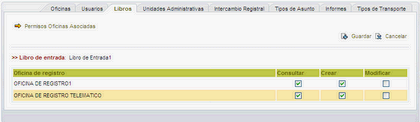

|
|
A esta pantalla se accede al pulsar sobre el enlace Asoc. Oficinas/Usuarios del listado de libros.
Nos permite dar permisos a las oficinas y tener acceso a los permisos de los usuarios de estas, asociar nuevas y configurar filtros.

- Asociar Oficinas: Mediante este enlace accederemos a la zona en la que asociar oficinas a este libro de registro.
- Listado oficinas: Al modificar los checkboxes y pulsar el botón
 Guardar modificaremos
los permiso de la oficina sobre ese libro. Guardar modificaremos
los permiso de la oficina sobre ese libro.
-
Eliminar Asociacion: Al pulsar la oficina dejará de estar asociada a este libro y se eliminarán los permisos que tiene con este libro.
-
Editar Permisos Usuarios: Desde aquí podremos dar permisos extra a los usuarios de la oficina o que estén agregados a ella.
-
Aplicar Filtros: Al pulsar en este enlace se accederá al formulario de configuración de filtros sobre el libro y oficina elegidos.
|
|
|